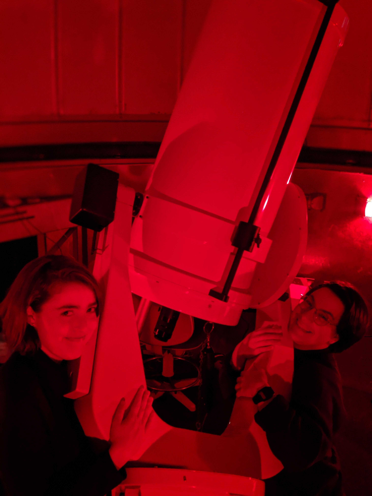
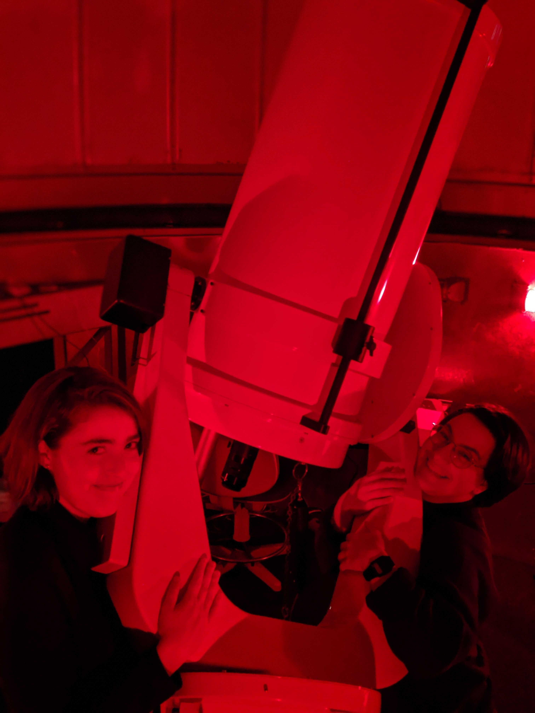

Since fall 2018, I've worked with the Department of Physics and Astronomy to coordinate weekly public observing nights using Macalester's own 16-inch reflector telescope. Although we're located in the heart of the Twin Cities, decent observing conditions allow us to show a broad range of targets.
 

Photos courtesy of J. Cannon.
We've welcomed Brownie and Cub Scout troops, visitors from other local colleges doing projects for classes, and any number of members of the Minneapolis/St. Paul community. Our public event for the lunar eclipse in January 2019 attracted over 150 people!
I am a founding member of Macalester College's own high power rocketry team, and have served as its Class of 2020 Representative since its initiation as a student organization. The club has entered the NASA Space Grant Midwest High Power Rocketry Competition on two occasions; in summer 2020 we will be traveling to New Mexico for the IREC Spaceport America Cup.
We've built rockets that can control their spin on ascent, that fly at supersonic speeds, and that were constructed by teams of students with no prior experience. Because Macalester is a liberal arts college without an engineering department, we seek to provide hands-on project experience to all interested students, regardless of background.